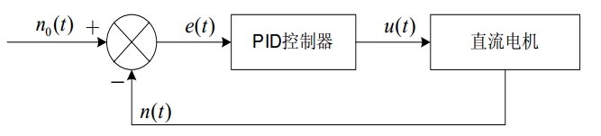
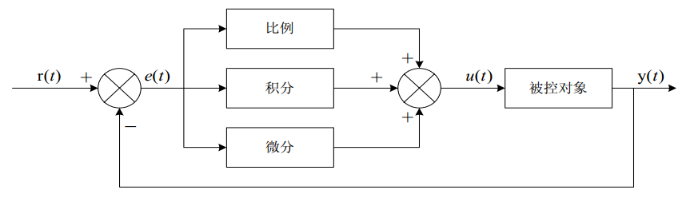

PID控制原理与增量式PID算法
本小节在理论上讲解 PID 控制原理，先引出模拟 PID 控制公式，然后离散化处理得到数字 PID 控制公式，推导出位置式 PID 控制公式，再进一步推导出增量式 PID 控制公式。
将偏差的比例（Proportion）、积分（Integral）和微分（Differential）通过线性组合构成控制量，用这一控制量对被控对象进行控制，这样的控制器称 PID 控制器。
模拟 PID 控制
在模拟控制系统中，控制器最常用的控制规律是 PID 控制。为了说明控制器的工作原理，先看一个例子。下图所示是一个小功率直流电机的调速框图。
Image 1.5.1 - 小功率直流电机调速系统 alt ><
上图中，给定转速 n0(t) 与实际转速 n(t) 进行比较，其差值 e(t)=n0(t)−n(t)，经过 PID 控制器调整后输出电压控制信号 u(t)，u(t) 经过功率放大后，驱动直流电动机改变其转速。
抽象化的模拟 PID 控制系统原理框图，如下图所示。该系统由模拟 PID 控制器和被控对象组成。
Image 1.5.2 - 模拟 PID 控制系统原理图 alt ><
图中，r(t) 是给定值，y(t) 是系统的实际输出值，给定值与实际输出值构成控制偏差：
e(t)=r(t)−y(t) （式 1-1）
e(t) 作为 PID 控制的输入， 作为 PID 控制器的输出和被控对象的输入。 所以模拟 PID 控制器的
控制规律为
u(t)=kp[e(t)+Ti1∫e(t)dt+Tddtde(t)] （式 1-2）
其中，Kp 为控制器的比例系数，Ti 为控制器的积分时间，也称积分系数，Td为控制器的微分时间，也称微分系数。
数字 PID 控制
由于计算机的出现，计算机进入了控制领域。人们将模拟 PID 控制规律引入到计算机中来。对（式 1-2）的 PID 控制规律进行适当的变换，就可以用软件实现 PID 控制，即数字 PID 控制。
数字式 PID 控制算法可以分为位置式 PID 和增量式 PID 控制算法。
位置式 PID 算法
由于计算机控制是一种采样控制，它只能根据采样时刻的偏差计算控制量，而不能像模拟控制那样连续输出控制量，进行连续控制。由于这一特点，（式 1-2）中的积分项和微分项不能直接使用，必须进行离散化处理。离散化处理的方法为：以 T 作为采样周期，k 作为采样序号，则离散采样时间 kT对应着连续时间 t，用矩形法数值积分近似代替积分，用一阶后向差分近似代替微分，可作如下近似变换：
t≈kT(k=0,1,2,...)
∫e(t)dt≈T∑j=0ke(jT)=T∑j=0kej
dtde(t)≈Te(kT)−e[(k−1)T]=Tek−ek−1
上式中，为了表达的方便，将类似于 e(kT) 简化成 ek 等。
将（式 2-1）代入（式 1-2），就可以得到离散的 PID 表达式为
uk=Kp[ek+Ti(T)∑j=0kej+TdT(ek−ek−1)] （式 2-2）
或
uk=Kp∗ek+Ki∑j=0kej+Kd(ek−ek−1) （式 2-3）
其中，
k 为 采样序号，k = 0,1,2,...；
uk 为第 k 次采样时刻的计算机输出值；
ek 为第 k 次采样时刻输入的偏差值；
ek−1 为第 k-1 次采样时刻输入的偏差值；
Ki 为积分系数，Ki=kp∗TiT；
Kd 为微分系数，Kd=Kp∗TTd。
如果采样周期足够小，则 （式 2-2）或（式 2-3）的近似计算可以获得足够精确的结果，离散控制过程与连续过程十分接近。
（式 2－2）或（式 2－3） 表示的控制算法式直接按（式 1 －2） 所给出的 PID 控制规律定义进行计算的，所以它给出了全部控制量的大小，因此被称为全量式或位置式 PID 控制算法。
这种算法的缺点是：由于全量输出，所以每次输出均与过去状态有关，计算时要对 ek 进行累加，工作量大。并且，因为计算机输出的对应的是执行机构的实际位置，如果计算机出现故障，输出的将大幅度变化，会引起执行机构的大幅度变化，有可能因此造成严重的生产事故，这在实际生产际中是不允许的。
增量式 PID 算法
所谓增量式 PID 是指数字控制器的输出只是控制量的增量 △uk 。 当执行机构需要的控制量是增量，而不是位置量的绝对数值时，可以使用增量式 PID 控制算法进行控制。
增量式 PID 控制算法可以通过（式 2－2）推导出。由（式 2－2）可以得到控制器的第 k－1 个采样时刻的输出值为：
u(k−1)=Kp[e(k−1)+Ti(T)∑j=0k−1ej+TdT(e(k−1)−e(k−2))] （式 2-4）
用（式 2-2）减去（式 2-4）相减并整理，就可以得到增量式 PID 控制算法公式：
△uk=uk−uk−1=Kp[ek−ek−1+Ti(T)ek+TdTek−2ek−1+ek−2]
=Kp(1+TiT+TTd)ek−Kp(1+T2Td)ek−1+KpTTdek−2 （式 2-5）
=Aek+Bek−1+Cek−2
其中，
A=Kp(1+TiT+TTd)；
B=Kp(1+T2Td)；
C=KpTTd。
由（式 2－5）可以看出，如果计算机控制系统采用恒定的采样周期 T ，一旦确定 A、 B、 C，只要使用前后三次测量的偏差值，就可以由（式 2－5）求出控制量。
增量式 PID 控制算法与位置式 PID 算法（式 2－2）相比，计算量小的多，因此在实际中得到广泛的应用。
而位置式 PID 控制算法也可以通过增量式控制算法推出递推计算公式：
uk=uk−1+△uk （式 2-6）
（式 2-6）就是目前在计算机控制中广泛应用的数字递推 PID 控制算法。
采样周期的选择
香农（Shannon） 采样定律 ：为不失真地复现信号的变化， 采样频率至少应大于或等于连续信号最高频率分量的二倍。根据采样定律可以确定采样周期的上限值。实际采样周期的选择还要受到多方面因素的影响，不同的系统采样周期应根据具体情况来选择。
采样周期的选择，通常按照过程特性与干扰大小适当来选取采样周期：即对于响应快、（如流量、压力） 波动大、易受干扰的过程，应选取较短的采样周期；反之，当过程响应慢（如温度、 成份）、滞后大时，可选取较长的采样周期。
采样周期的选取应与 PID 参数的整定进行综合考虑， 采样周期应远小于过程的扰动信号的周期，在执行器的响应速度比较慢时，过小的采样周期将失去意义，因此可适当选大一点；在计算机运算速度允许的条件下，采样周期短， 则控制品质好；当过程的纯滞后时间较长时， 一般选取采样周期为纯滞后时间的 1/4～1/8。